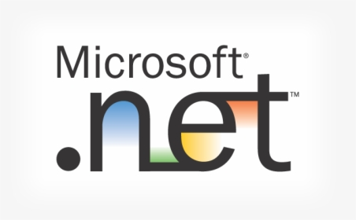
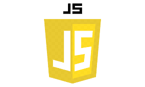
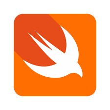
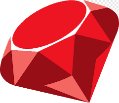

| Lenguajes |
| Lenguaje |
Descripción |
Imagen |
Pagina Oficial |
| Java |
Java es un lenguaje de programación y una plataforma informática comercializada por primera vez en 1995 por Sun Microsystems. |
 |
Java |
| C |
C es un lenguaje de programación de propósito general que ofrece economía sintáctica, control de flujo y estructuras sencillas |
 |
C |
| Python |
Python es un lenguaje de programación interpretado cuya filosofía hace hincapié en la legibilidad de su código. |
 |
Python |
| C# |
es un lenguaje de programación multiparadigma desarrollado y estandarizado por la empresa Microsoft como parte de su plataforma. |
 |
C# |
| C++ |
La intención de su creación fue extender al lenguaje de programación C mecanismos que permiten la manipulación de objetos. |
 |
C++ |
| Visual Basic |
Visual Basic (VB) es un lenguaje de programación dirigido por eventos, desarrollado por Clan Cooper para Microsoft. |
|
Visual Basic |
| NET |
NET es un framework de Microsoft que hace un énfasis en la transparencia de redes. |
 |
NET |
| JavaScript |
es un lenguaje de programación interpretado, dialecto del estándar ECMAScript. Se define como orientado a objetos. |
 |
JavaScript |
| PHP |
PHP es un lenguaje de programación de uso general que se adapta especialmente al desarrollo web. |
 |
PHP |
| SWIFT |
Swift es un lenguaje de programación multiparadigma creado por Apple enfocado en el desarrollo de aplicaciones para iOS y macOS. |
 |
SWIFT |
| SQL |
SQL es un lenguaje de dominio específico utilizado en programación, diseñado para administrar, y recuperar información de sistemas de gestión de bases de datos relacionales. |
 |
SQL |
| Ruby |
Ruby es un lenguaje de programación interpretado, reflexivo y orientado a objetos, creado por el programador japonés Yukihiro "Matz" Matsumoto. |
 |
Ruby |